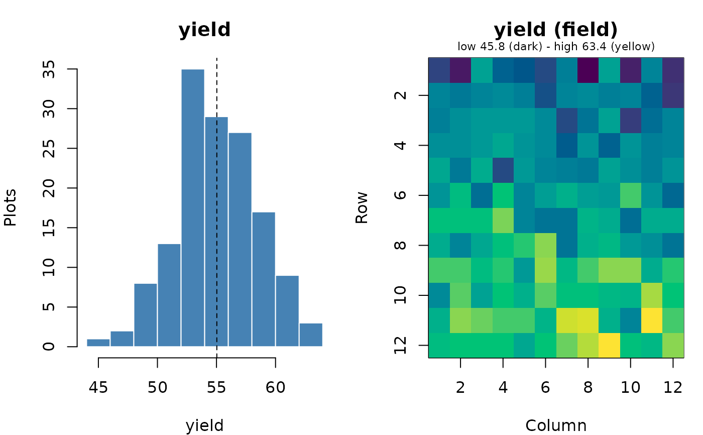

Draws, for each location (or other group), a histogram of the trait and a
map of the field with the value of every plot, so gradients, odd plots
and outliers are easy to see. Outliers from find_outliers() can be
circled on the map.
Arguments
- data
A data frame with one row per plot.
- trait
Name of the numeric trait column.
- by
Optional grouping column; by default
"location"when the data have it.- type
"both"(histogram and field map),"histogram"or"field".- row_col, col_col
Field row and column columns (for the map).
- outliers
Optional table from
find_outliers()to circle on the map.- breaks
Histogram breaks, as in
graphics::hist().
Value
Invisibly, a tibble with a summary per group: plots, values, missing, mean, sd, min, max and CV (%).
Examples
rc <- augmented_row_column_design(paste0("G", 1:108), paste0("C", 1:4),
12, 12, 4, 4, n_candidates = 5, seed = 1)
d <- rc$design
d$yield <- 50 + 0.8 * d$row + rnorm(nrow(d), sd = 2)
plot_trait(d, "yield")
